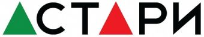

MITEX 2026 · Россия · Стенд 7D201
АСТАРИ, ООО
Карточка проверена 10 ноября 2026, 09:28 · Источник ↗ · Снимок оригинальной карточки ↗
О компании
Компания АСТАРИ вот уже более 25 лет успешно занимается продажей и сервисным обслуживанием ведущих мировых производителей: 1. силовой продукции (генераторов и мотопомп), 2. садово-парковой техники, 3. моечно-уборочного оборудования, 4. двигателей для средств малой механизации. В портфель брендов АСТАРИ, эксклюзивным импортером которых является компания, входят EUROPOWER (Бельгия), BRIGGS & STRATTON (США), ZONGSHEN (КНР), EFCO (Италия), LAVOR (Италия), EVOLINE (КНР) и многие другие всемирно известные производители из Европы, Северной Америки и Азии. АСТАРИ является также официальным дистрибьютером таких всемирно известных японских брендов, как: Honda, Yamaha, Koshin и Daishin. Важно отметить, что вся предлагаемая АСТАРИ продукция является лучшей в своем классе, ведь только с качественной и надежной продукцией можно выполнить поставленную в момент создания компании цель: ДОСТАВИТЬ СВОИМ КЛИЕНТАМ РАДОСТЬ ОТ ПОКУПКИ!
Контакты
Все контактные сведения из карточки
Контакты Юридический адрес Телефон: +7 (495) 792-06-72, +7 (495) 636-28-94, +7 (499) 243 41 00 E-mail: zapros@astari.ru Адрес: 121059, Россия, Москва, ул. Б.Дорогомловская, д.10 Веб-сайт: https://www.astari.ru E-mail: zapros@astari.ru Телефон: +7 (495) 792-06-72, +7 (495) 636-28-94, +7 (499) 243 41 00
Все рубрики участника
Mitex - Рубрикатор
- 2. Садовая техника, инструмент, инвентарь, оборудование, расходные материалы и насосы
- 9. Компрессоры, генераторы, силовая техника
Зал
- Зал № 7
Участник выставки
- MITEX
Фотографии и изображения
Видео, каталоги и документы
В доступной карточке нет видео или документов. Смотрите сайт участника.
Каталог продукции участника
Материалы каталога
HONDA (Япония) EVOLINE (КНР) LAVOR (Италия) EFCO (Италия) EUROPOWER (Бельгия) ZONGSHEN (КНР) BRIGGS & STRATTON (США)
HONDA (Япония)
HONDA (Япония) Honda (Хонда) - одна из крупнейших в мире корпораций, специализирующихся на производстве различной моторной техники премиального сегмента. История успешного развития Honda насчитывает 70 лет, за которые был пройден эволюционный путь от небольшой компании из Японии до гигантской международной корпорации. Модельный ряд продукции Honda представлен: - двигателями для средств малой механизации; - многочисленными типами генераторов и мотопомп; - различной садово-парковой техникой (мотокосы, газонокосилки, мини-тракторы, культиваторы, ножницы для живой изгороди, воздуходувки, снегоуборщики и т.д.). Вся бензиновая техника, выпускаемая под брендом Honda, оснащается только двигателями собственного производства, которые считаются лучшими в своем классе. Потребители продукции Honda во всем мире, от владельцев загородных домов до коммерческих и промышленных организаций, выбирают технику Honda за ее непревзойденное качество, высокую степень надежности и отменную производительность. Однако самое главное отличие всей продукции Honda – это способность работать в любых погодных условиях, что немаловажно для эксплуатации на территории России. ООО «АСТАРИ» - официальный дистрибьютор, zapros@astari.ru www.hondaset.ru
EVOLINE (КНР)
EVOLINE (КНР) EVOline - относительно недавно появившийся бренд премиальной садово-парковой техники из Китая, который за короткий период времени смог завоевать доверие огромного количества покупателей. Модельный ряд продукции EVOline представлен четырьмя направлениями: 1. Генераторы и мотопомпы. Генераторы с бензиновыми и газовыми двигателями. Мотопомпы для чистой и грязной воды, высоконапорные и для химических жидкостей. 2. Садовая техника: мотокосы, газонокосилки, мини-тракторы, ножницы для живой изгороди, воздуходувки, снегоуборщики и т.д. 3. Моечно-уборочное оборудование: подметальные и поломоечные машины, промышленные и строительные пылесосы 4. Двигатели общего назначения различных типов и комплектаций. Вся техника, выпускаемая под брендом EVOline, оснащается только двигателями самых известных производителей: HONDA (Япония), Briggs&Stratton (США), Zongshen (КНР), Loncin (КНР), RATO (КНР). Следует отметить, что абсолютно вся техника EVOLine характеризуется уникальным сочетанием запоминающегося дизайна, высокого качества изготовления, богатой стандартной комплектации и конкурентной цены. ООО«АСТАРИ» - эксклюзивный импортер, zapros@astari.ru www.evoline-rus.ru
LAVOR (Италия)
LAVOR (Италия) LAVOR (ЛАВОР) - всемирно известный бренд моечно-уборочного оборудования, основанный в Италии в 1975 году и принадлежащий концерну LAVORWASH. Под брендом LAVOR производится широкий модельный ряд разноплановой техники для мойки, уборки и чистки, как на открытых территориях, так и внутри помещений. Ассортимент LAVOR состоит более чем из 70 моделей моек высокого давления, пылесосов, ковровых экстракторов и пароочистителей. Вся продукция LAVOR характеризуется высоким качеством изготовления, непревзойденной надежностью, низкой стоимостью эксплуатации, применением только инновационных технологий и богатейшей стандартной комплектацией. Наличие у концерна сертификата качества ISO 9001:2000, а также сертификатов CE, CCC, CQC, GS, UL, TUV, KEMA, ROHS, INMETRO, EAC свидетельствует о высочайшем уровне надежности LAVORWASH как производителя и поставщика высококлассной продукции. ООО «АСТАРИ» - эксклюзивный импортер, zapros@astari.ru www.lavorpro.ru
EFCO (Италия)
EFCO (Италия) EFCO (ЭФКО) — итальянская компания, основанная в 1978 году как небольшое частное предприятие по производству садовых кусторезов и мотокос. 1980-е годы охарактеризовались для EFCO расширением ассортимента продукции, благодаря чему небольшое семейное предприятие превратилось в крупную торговую компанию, составляющую конкуренцию мировым лидерам по производству садовой техники. В 1996 году EFCO получила сертификат соответствия качества, являясь при этом единственной компанией на итальянском рынке, удостоенной подобного сертификата в данной отрасли. Это стало возможным для EFCO только потому, что компания выпускала высококачественную продукцию, постоянно расширяла ассортимент и при этом всегда была ориентирована на нужды потребителей. Сегодня продукция EFCO продается по всему миру, компания имеет официальные представительства во многих странах и обладает несколькими собственными заводами по производству оборудования, расположенными в Европе и Азии. ООО «АСТАРИ» - эксклюзивный импортер, zapros@astari.ru www.efco-rus.ru
EUROPOWER (Бельгия)
EUROPOWER (Бельгия) EUROPOWER Generators (ЕВРОПАУЭР Дженераторс) - всемирно известный производитель бензиновых генераторов и дизельных электростанций премиального уровня, все производство которого сосредоточено исключительно в Европе. История EUROPOWER Generators насчитывает более 30 лет, за которые был пройден эволюционный путь от небольшой компании из Бельгии, выпускавшей поначалу порядка 10 моделей бензогенераторов, до одного из крупнейших европейских производителей, модельный ряд которого насчитывает свыше 200 моделей электрогенераторов мощностью от 1 до 650 кВА. При сборке генераторов EUROPOWER используются только лучшие комплектующие от ведущих мировых производителей из Японии, США, Италии, Франции и Бельгии. Так, генераторные установки EUROPOWER оснащаются бензиновыми двигателями Honda и Briggs & Stratton или дизельными моторами Hatz, Yanmar, Kubota, Iveco и Volvo, а также альтернаторами Sincro, Mecc Alte и Leroy Somer. Такое сочетание лучших по качеству комплектующих позволяет эксплуатировать оборудование EUROPOWER даже в экстремальных условиях. Еще одной отличительной особенностью продукции EUROPOWER является проведение контроля качества каждого сошедшего с конвейера генератора, благодаря чему случаи поломок в период гарантии (которая, кстати, составляет 2 года) практически отсутствуют. Продукция EUROPOWER популярна как в частном секторе, так и в промышленном. Так, во многих странах бензиновые генераторы EUROPOWER используются пожарными и спасательными службами, а дизельные электростанции служат аварийным источником энергоснабжения сотен больниц, школ, телекоммуникационных компаний и выставочных центров. Все это говорит о всемирном признании производимой EUROPOWER Generators продукции. ООО «АСТАРИ» - эксклюзивный импортер, zapros@astari.ru www.europowerset.ru
ZONGSHEN (КНР)
ZONGSHEN (КНР) Zongshen Industrial Group (Зонгшен Индастриал Груп) - известный во всем мире национальный китайский концерн, входящий в список крупнейших компаний мира по объемам производства и продаж двигателей общего назначения и занимающий лидирующие позиции по производству силовой продукции. На всех предприятиях концерна Zongshen внедрен международный стандарт качества ISO 9001, который отражает способность предприятия представлять продукцию, отвечающую требованиям даже самых взыскательных потребителей. В своем развитии концерн намеренно не идет по пути удешевления стоимости производимого продукта, предпочитая использовать качественные комплектующие и обеспечивая повышенный контроль на всех этапах производства. Модельный ряд техники Zongshen представлен многочисленными типами бензиновых двигателей, генераторов и мотопомп, отлично зарекомендовавших себя в процессе эксплуатации в различных российских климатических условиях, причем как в частном, так и промышленном секторе. Основным отличием Zongshen от множества других производителей из Китая является наличие не только собственной научно-исследовательской базы, но и современных заводов с полным циклом производства комплектующих и сборкой готового к эксплуатации оборудования, отвечающего современным мировым стандартам качества. В настоящее время продукция Zongshen Industrial Group (Зонгшен Индастриал Груп) поставляется в РФ под брендом EVOline. ООО «АСТАРИ» - эксклюзивный импортер, zapros@astari.ru www.zongshenset.ru
BRIGGS & STRATTON (США)
BRIGGS & STRATTON (США) Briggs & Stratton (Бриггс и Страттон) является мировым лидером по объему производства двигателей общего назначения и одним из крупнейших производителей различной садовой техники и силовой продукции среднего и премиального сегментов. История Briggs&Stratton насчитывает более 100 лет, за которые был пройден эволюционный путь от небольшой компании из США до гигантской международной корпорации. Модельный ряд продукции Briggs&Stratton представлен: - широким ассортиментом двигателей для средств малой механизации; - несколькими типами бензиновых генераторов и газовых электростанций различной мощности; - снегоуборочной техникой. Вся продукция Briggs&Stratton характеризуется высоким качеством изготовления, богатой стандартной комплектацией, универсальностью и практичностью. Именно поэтому она популярна более чем в 150 странах мира. ООО «АСТАРИ» - эксклюзивный импортер zapros@astari.ru www.briggsset.ru